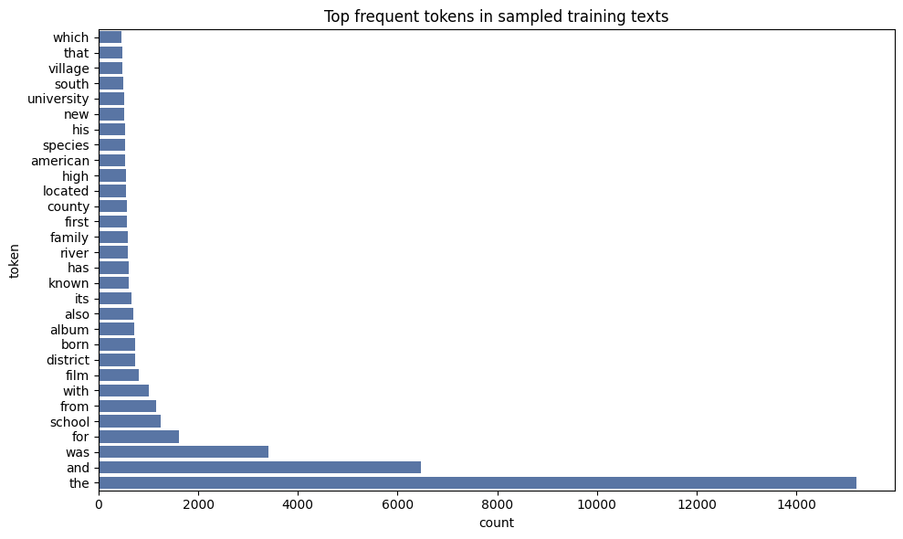
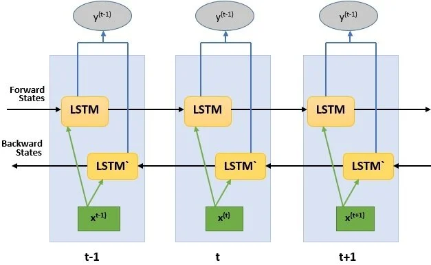
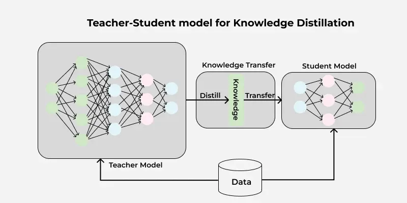
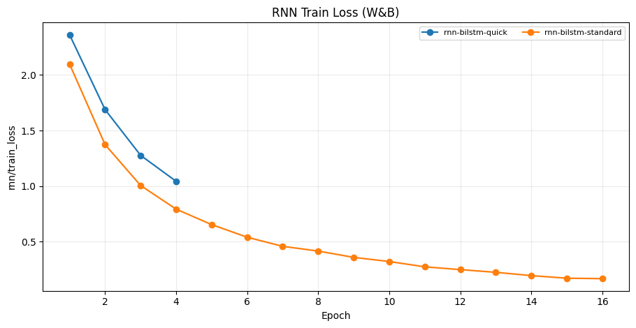
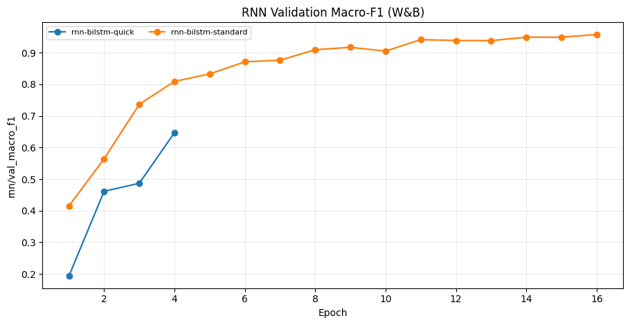
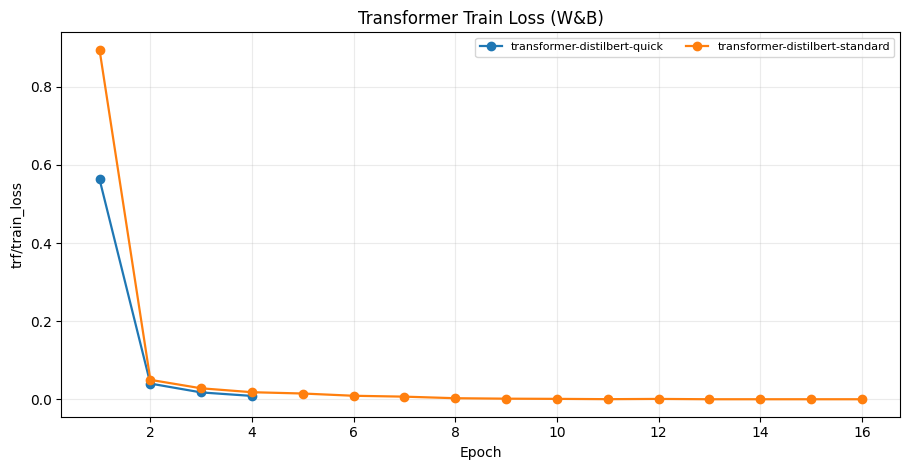
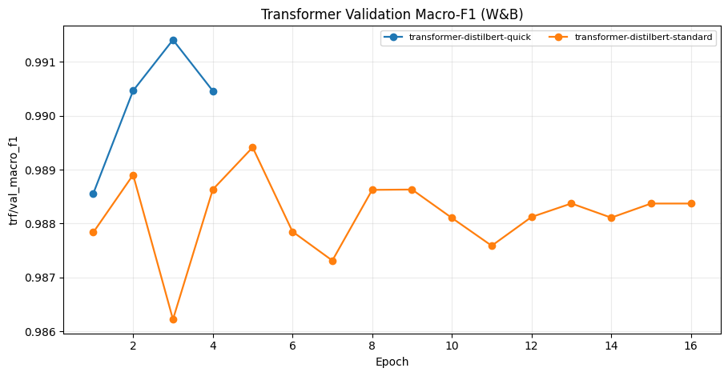
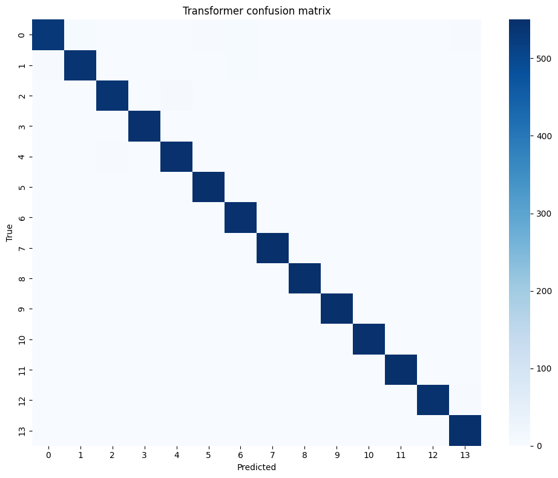
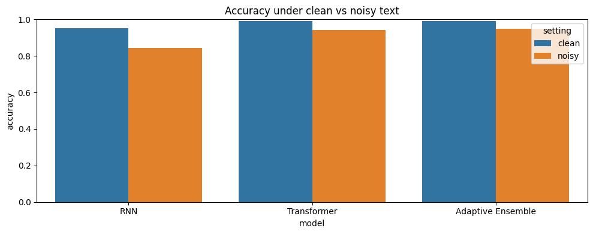
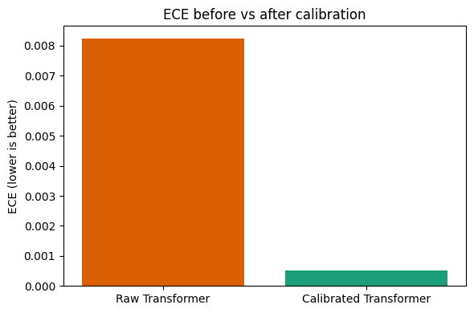

01. Giới thiệu và mô tả bài toán
DBPedia 14 là một benchmark 14-class phù hợp để so sánh các kiến trúc mô hình.
Quy trình thực nghiệm được triển khai theo hướng tuần tự: khảo sát dữ liệu, xây dựng pipeline, so sánh BiLSTM với DistilBERT, sau đó mở rộng sang ensemble, calibration, robustness, efficiency và interpretability.
Sample Text Examples
| Index | Text | Label |
|---|---|---|
| 0 | Nigua river (salinas puerto rico). The nigua river (salinas puerto rico) is a river of puerto rico. | 7 (NaturalPlace) |
| 1 | Bulbophyllum smitinandii. Bulbophyllum smitinandii is a species of orchid in the genus bulbophyllum. | 10 (Plant) |
| 2 | Xanthophyllum. Xanthophyllum is a genus of about 94 species of trees and shrubs of the plant family polygalaceae. The generic name is from the greek meaning yellow leaf referring to how the leaves are often yellow when dry. In borneo it is known as minyak berok in malay or nyalin in the iban language. | 10 (Plant) |
02. EDA
EDA để chốt `MAX_LEN` và đọc phân bố dữ liệu.
Các biểu đồ dưới đây lấy từ thư mục Image_DL_text/ (export từ
notebook / Colab); tên file đã được khớp với asset trong repo.

| word_len | char_len | |
|---|---|---|
| mean | 49.03 | 302.15 |
| std | 22.55 | 136.58 |
| min | 5.00 | 27.00 |
| 50% | 49.00 | 303.00 |
| 95% | 83.00 | 498.00 |
| max | 310.00 | 2130.00 |

| Label | Mean | Min | Max |
|---|---|---|---|
| Building | 58.8 | 7 | 145 |
| EducationalInstitution | 55.0 | 9 | 167 |
| Artist | 51.3 | 8 | 310 |
| Animal | 34.4 | 7 | 278 |
03. Tiền xử lý dữ liệu
Preprocessing
Quy trình tiền xử lý được áp dụng nhất quán cho cả hai mô hình RNN và Transformer, với hai chế độ khác nhau để so sánh ảnh hưởng của độ aggressiveness.
1. Minimal Mode (Chế độ tối thiểu)
Các bước:
- Chuyển đổi thành chữ thường (lowercase)
- Loại bỏ khoảng trắng thừa với regex
\s+ - Giữ nguyên dấu câu và cấu trúc văn bản
- Không loại bỏ stopwords
Nhược điểm: Có thể chứa nhiều noise từ các từ phổ biến ít có ý nghĩa.
2. Aggressive Mode (Chế độ tích cực)
Các bước:
- Chuyển đổi thành chữ thường (lowercase)
- Tokenization với regex
[a-z0-9']+ - Loại bỏ English stopwords từ danh sách
sklearn.feature_extraction.ENGLISH_STOP_WORDS - Loại bỏ các từ ngắn (len < 3)
- Tái tạo văn bản từ tokens còn lại
Nhược điểm: Mất đi thông tin ngữ cảnh; có thể làm giảm chất lượng trên Transformer vì phá vỡ cấu trúc input cho BERT.
Các kỹ thuật chung cho cả hai mô hình
04. Lựa chọn mô hình
Model Architecture


05. Kết quả training
Training Curves
Các đường cong huấn luyện cho thấy BiLSTM cải thiện dần theo epoch, trong khi DistilBERT hội tụ nhanh hơn và đạt chất lượng cao hơn trên tập kiểm thử.




Model Performance & Metrics
| Model | Accuracy | Macro-F1 | Weighted-F1 | Train Time |
|---|---|---|---|---|
| BiLSTM (RNN) | 0.9529 | 0.9528 | 0.9528 | 391.8s |
| DistilBERT | 0.9914 | 0.9914 | 0.9914 | 6382.5s |
| Adaptive Ensemble | 0.9917 | 0.9917 | 0.9917 | - |


06. So sánh cấu hình & ablation
Robustness & Calibration
Các biểu đồ và bảng dưới đây cho phép đánh giá mô hình không chỉ theo accuracy, mà còn theo mức suy giảm khi đầu vào bị nhiễu và theo chất lượng hiệu chỉnh xác suất.
| Setting | Model | Accuracy | Macro-F1 | Weighted-F1 |
|---|---|---|---|---|
| clean | RNN | 0.952987 | 0.952842 | 0.952842 |
| clean | Transformer | 0.991429 | 0.991422 | 0.991422 |
| clean | Adaptive Ensemble | 0.991688 | 0.991684 | 0.991684 |
| noisy | RNN | 0.842987 | 0.842169 | 0.842169 |
| noisy | Transformer | 0.942987 | 0.942424 | 0.942424 |
| noisy | Adaptive Ensemble | 0.947922 | 0.947379 | 0.947379 |



| Model | Clean | Noisy | Drop |
|---|---|---|---|
| BiLSTM | 0.953 | 0.843 | 0.110 |
| DistilBERT | 0.991 | 0.943 | 0.048 |
| Ensemble | 0.992 | 0.948 | 0.044 |
| Best temperature | 2.3644 |
| ECE raw | 0.0082 |
| ECE calibrated | 0.0005 |
| Interpretation | Temperature scaling giảm overconfidence rõ rệt. |
07. Phần mở rộng
Strategy & Efficiency
Bảng dưới đây tổng hợp 6 cấu hình ablation đã chạy trong notebook, để so sánh trực tiếp ảnh hưởng của `preprocess`, `max_len` và `strategy` lên kết quả validation.
| Config | Preprocess | Aug | MAX_LEN | Strategy | Val Acc | Val Macro-F1 |
|---|---|---|---|---|---|---|
| c01 | minimal | none | 96 | freeze | 0.9582 | 0.9580 |
| c02 | minimal | none | 96 | full | 0.9827 | 0.9826 |
| c03 | minimal | none | 128 | freeze | 0.9531 | 0.9528 |
| c04 | minimal | none | 128 | full | 0.9878 | 0.9878 |
| c05 | minimal | none | 192 | full | 0.9878 | 0.9878 |
| c06 | aggressive | none | 128 | freeze | 0.8918 | 0.8873 |
| Setting | Accuracy | Time |
|---|---|---|
| Freeze Encoder | 0.9849 | 972.3s |
| Full Fine-tune | 0.9889 | 2976.3s |
| Model | Params | Latency / batch |
|---|---|---|
| BiLSTM | 2.1M | 0.0082s |
| DistilBERT | 67M | 0.0527s |
Company: business, corporation, headquarters, revenue, founded
Album: track, song, released, label, band
Village: population, municipality, county, located, region
08. Inference samples
Sample Inference
Các giá trị in đậm là confidence cao nhất trong từng nhóm ví dụ. Phần này minh họa trực tiếp cách hệ thống phản hồi trên câu đầu vào thực tế.
| Text preview | Model | Pred label | Confidence | Latency (ms) |
|---|---|---|---|---|
| The football team won the national championship after a dramatic final match. | transformer | EducationalInstitution | 0.9934 | 10.48 |
| The football team won the national championship after a dramatic final match. | rnn | Athlete | 0.7333 | 23.44 |
| The football team won the national championship after a dramatic final match. | ensemble | EducationalInstitution | 0.8804 | 60.38 |
| Researchers introduced a more efficient transformer architecture for long context. | transformer | Company | 0.9402 | 8.54 |
| Researchers introduced a more efficient transformer architecture for long context. | rnn | Plant | 0.2083 | 3.38 |
| Researchers introduced a more efficient transformer architecture for long context. | ensemble | Company | 0.9208 | 12.87 |
| A new electric vehicle model announced improved battery and autonomous driving features. | transformer | MeanOfTransportation | 1.0000 | 8.87 |
| A new electric vehicle model announced improved battery and autonomous driving features. | rnn | MeanOfTransportation | 0.2247 | 3.56 |
| A new electric vehicle model announced improved battery and autonomous driving features. | ensemble | MeanOfTransportation | 0.9999 | 11.68 |
09. Error Analysis
Error Analysis
Phần này phân tích các case nhầm lẫn có confidence cao từ mô hình transformer, sử dụng highlighting để chỉ ra tín hiệu mà mô hình tập trung vào.
10. Live Demo
Live Demo
Khối bên dưới nhúng trực tiếp giao diện Gradio của hệ thống.